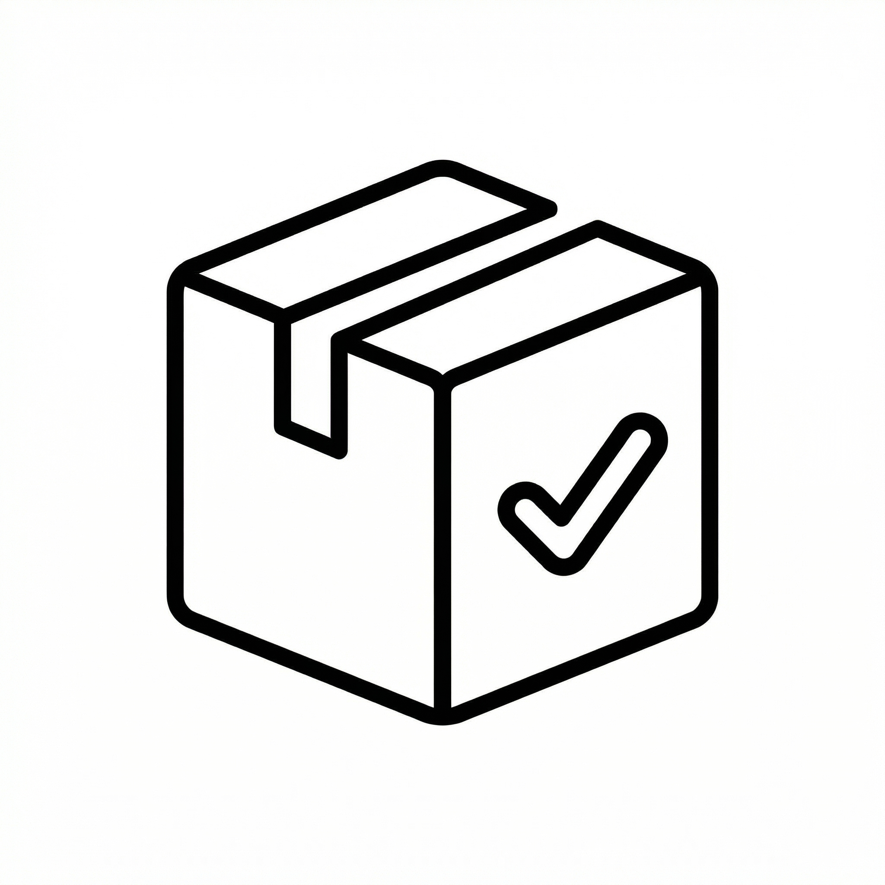
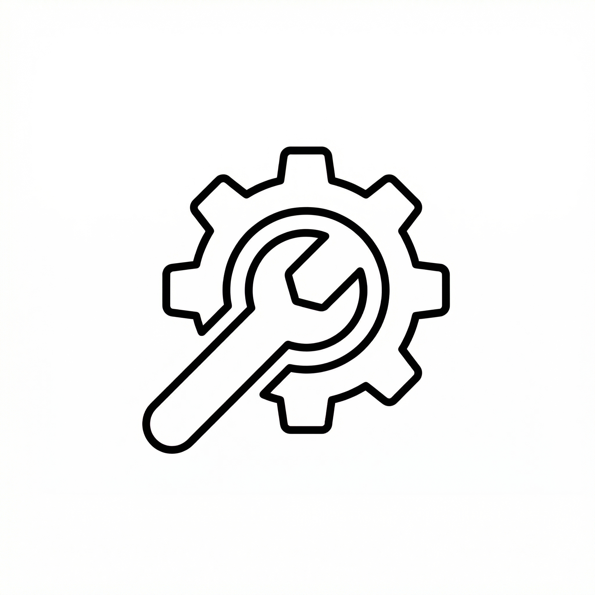
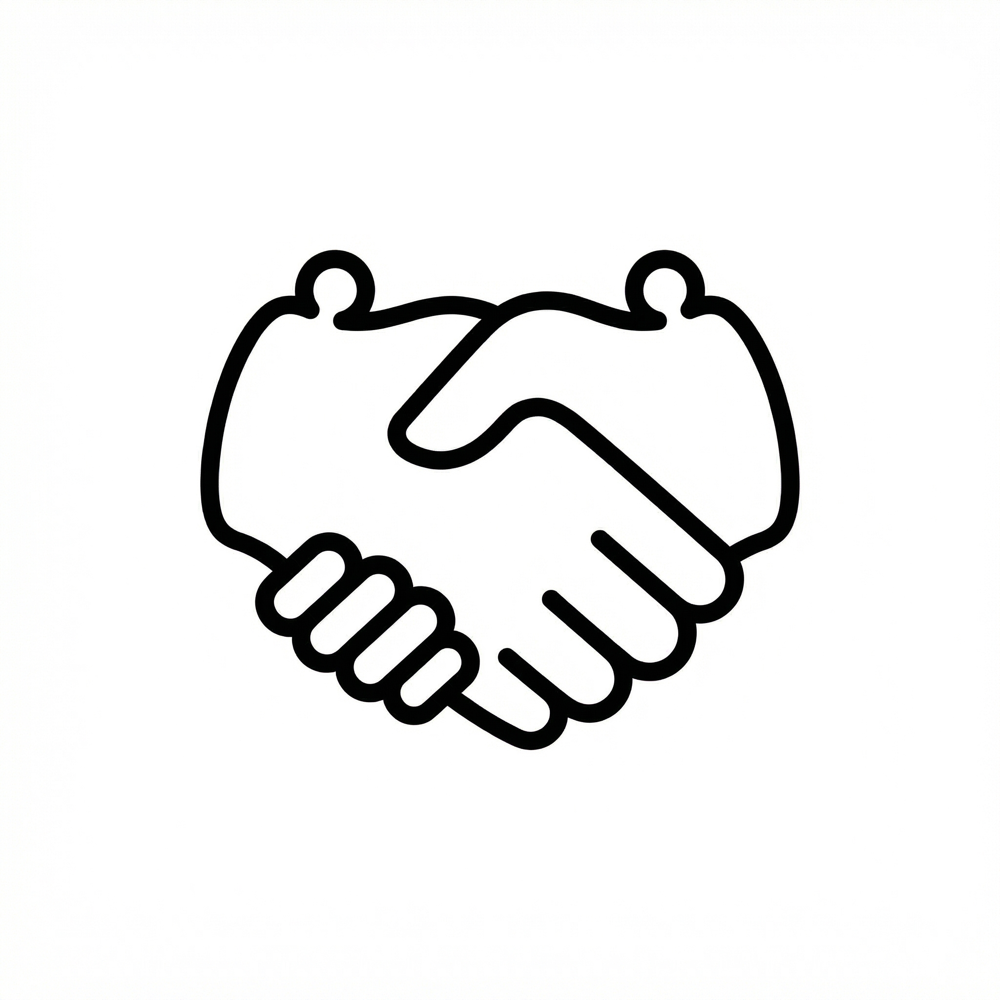

Vývoj webových aplikací
Bez zbytečného šumu, v dohodnutém termínu. Jak malé, tak velké aplikace.

Spolehlivá dodávka
- Funkční web nebo aplikace v dohodnutém termínu.
- Na dotazy odpovídám rychle, problémy řeším rovnou.
- Říkám otevřeně, co dává smysl – a co ne.

Co umím
- Technologii volím podle projektu, ne podle trendu.
- Kód píšu tak, aby ho další vývojář pochopil.
- Samozřejmostí jsou testy na různých úrovních aplikace.

Jak to funguje
- Průběžně sdílím stav projektu – žádné překvapení na konci.
- Změny a nejasnosti řeším okamžitě, ne na příštím meetingu.
- Funguje to na dálku i přímo u vás nebo s vaším týmem.
- Nový projekt, posílení týmu nebo jednorázový audit – jak potřebujete.